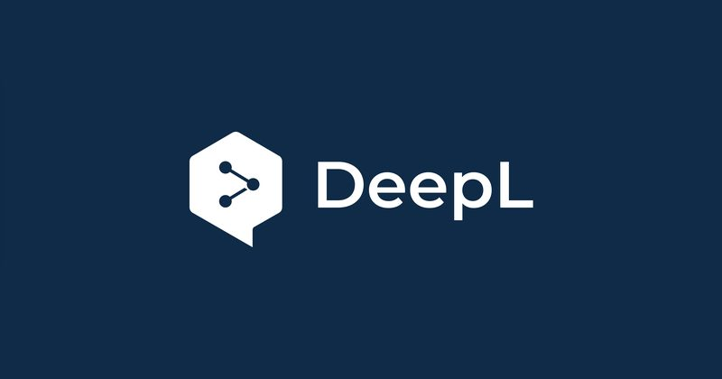
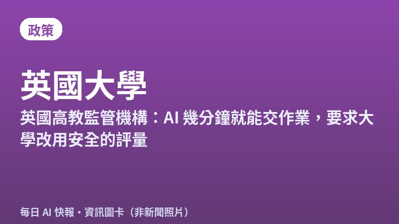
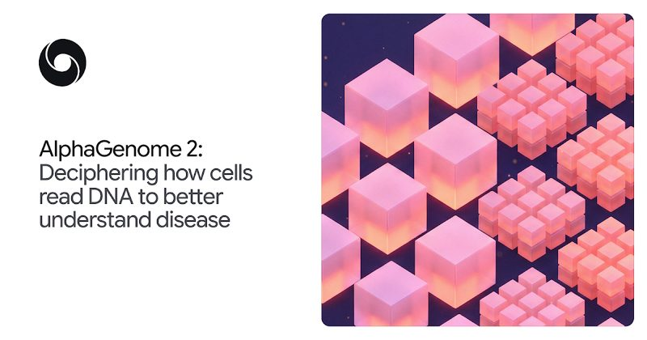
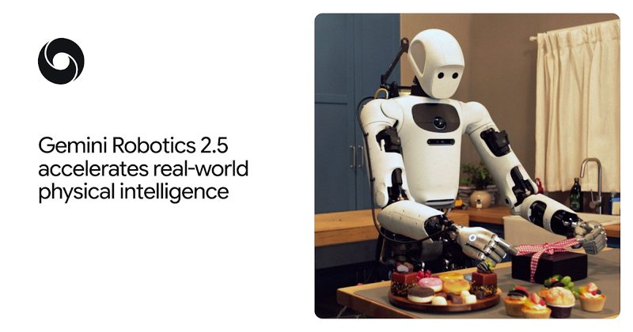
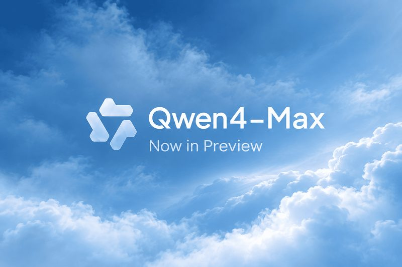

今日頭條
Claude 推出試算表與白板 PLUS：Gemini 登上 Apple CarPlay
本期重點：Anthropic 在 Claude 裡加入試算表、白板與資料儀表板；Google 把 Gemini App 帶進 Apple CarPlay。另有 DeepL 會模仿語氣的即時口譯、英國要求大學改用防 AI 的考試、Grok Build 分享連結外洩資料、DeepMind 的 AlphaGenome 2 與機器人模型，以及阿里巴巴 Qwen4-Max 開放試用。
📋 2026/11/12（四） 共 8 則 Claude 推出試算表、白板與資料儀表板 Gemini App 登上 Apple CarPlay，開車也能用語音對話 DeepL 推出 Aure，即時口譯會跟著你的語氣變化 英國高教監管機構：AI 幾分鐘就能交作業，要求大學改用安全的評量 Grok Build 分享連結可被搜尋，數萬個 App 資料外露 DeepMind 推出 AlphaGenome 2，預測基因變異如何影響特定細胞 DeepMind 機器人模型 Gemini Robotics 2.5，產線揀料成功率 96% 阿里巴巴開放 Qwen4-Max 預覽版，限期試用到 11 月 25 日 圖：Anthropic 新上線 #1 Claude 推出試算表、白板與資料儀表板 Anthropic 11 月 10 日推出 Claude Whiteboards 與 Claude Sheets 測試版，原本的 Claude Dashboards 改名為 Claude Data 並正式開放，三者都限付費方案。Sheets 可以用一句話生成含分頁、公式、格式與下拉選單的試算表，Whiteboards 能把口述的計畫整理成有負責人與日期的白板，團隊可以一起編輯。
💡 跟你有什麼關係： 像活動追蹤表、預算表這類常見表格，可以直接請 Claude 建好再和同事共用，不必在聊天視窗和 Excel 之間來回複製。
⚠️ 官方說 Sheets 目前只有基本試算表功能，需要完整功能時可匯出成 .xlsx 或 CSV；Sheets 與 Whiteboards 仍是測試版。
📰 原始來源：Claude 官方（2026-11-10） ↗ 圖：Google 新上線 #2 Gemini App 登上 Apple CarPlay，開車也能用語音對話 Google 11 月 11 日宣布 Gemini App 開始在全球的 Apple CarPlay 上線，支援所有 Gemini Live 可用的語言。駕駛點車機上的 Gemini 圖示就能用語音查行事曆、摘要未讀信件、找附近餐廳，對話會同步回 iPhone 的 Gemini App。
💡 跟你有什麼關係： 用 iPhone 連車機的人，通勤時可以用說的請 Gemini 整理行程或練習簡報，不用拿手機。
⚠️ 使用前要先更新 Gemini App、開啟麥克風權限，並在 iPhone 上至少用過一次 Gemini Live；每日簡報等個人化功能未滿 18 歲與歐洲經濟區不提供。
📰 原始來源：Google 官方部落格（2026-11-11） ↗ 
圖：DeepL 工具 #3 DeepL 推出 Aure，即時口譯會跟著你的語氣變化 DeepL 11 月 11 日發表語音模型 Aure，用在即時口譯產品 DeepL Voice。它會持續分析說話者的語氣、情緒、重音與語速，讓翻譯後的聲音保留本人的音色和表達方式，首批支援英、德、西、法、義、日、葡、韓 8 種語言。
💡 跟你有什麼關係： 跨國視訊會議或面對面溝通時，對方聽到的翻譯更像你本人在說話，不只是平板的機器音。
⚠️ 首批語言不含中文；DeepL 表示會議逐字稿與翻譯不會永久儲存，效果以官方說法為主。
📰 原始來源：DeepL 新聞稿（2026-11-11） ↗ 
資訊圖卡（總幕僚長製圖，非新聞照片） 政策 #4 英國高教監管機構：AI 幾分鐘就能交作業，要求大學改用安全的評量 英國學生事務辦公室（OfS）11 月 11 日公布與 Advance HE 合作的研究，訪談 300 多名師生，發現許多無人監考的作業用大型語言模型幾分鐘就能完成，成績還和自己寫的差不多。OfS 表示會要求學校確保評量有效，很多情況需要改用閉卷考、口頭報告、實作等防 AI 的方式，做不到的學校可能被處罰。
💡 跟你有什麼關係： 不只英國，各地學校都在面對同樣問題；家長和學生可以預期作業與考試方式會改變，「會用 AI」和「自己真的會」都會被要求。
⚠️ 研究以英格蘭高教機構為主；OfS 表示不會另訂新法規，而是用既有監管條件執行。
📰 原始來源：英國 OfS 官方新聞稿（2026-11-11） ↗ 圖：SpaceXSI 宣傳圖經 Ars Technica 新聞 #5 Grok Build 分享連結可被搜尋，數萬個 App 資料外露 Ars Technica 11 月 10 日報導，資安公司 Claroc 發現 SpaceXSI 的 AI 寫程式工具 Grok Build，分享連結的隨機字串放在網域左邊，可透過公開的被動 DNS 紀錄查出來。Claroc 查到 43,601 個 grok.me 連結，其中超過 35,000 個點開就能看，內容包括員工名冊、體檢結果與 SpaceXSI 自家的機密業務資料。
💡 跟你有什麼關係： 用 AI 快速做出的小 App 若設成「知道連結就能看」，連結不一定真的保密；放進去的個資和公司資料要先想清楚。
⚠️ SpaceXSI 在 Ars 詢問後移除了自家 24 個 App 的連結，其他用戶的資料在報導時多數仍可存取。
📰 原始來源：Ars Technica（2026-11-10，引 Claroc 研究） ↗ 
圖：Google DeepMind 研究 #6 DeepMind 推出 AlphaGenome 2，預測基因變異如何影響特定細胞 Google DeepMind 11 月 11 日發表 AlphaGenome 2，能預測 DNA 變異對特定細胞類型與狀態的影響，不再只看整個組織的平均。模型用 68 種組織、超過 1 億筆單一細胞資料訓練，找出會改變基因表現的變異數量約是前一代的兩倍，開放非商業研究透過 API 使用。
💡 跟你有什麼關係： 這類工具能幫研究人員更快找出疾病相關的基因變異，長期可能加快罕見疾病與新藥研究。
⚠️ DeepMind 表示僅供研究使用，未經臨床或診斷驗證，不能拿來判讀個人基因檢測。
📰 原始來源：Google DeepMind 官方部落格（2026-11-11） ↗ 
圖：Google DeepMind 研究 #7 DeepMind 機器人模型 Gemini Robotics 2.5，產線揀料成功率 96% Google DeepMind 11 月 10 日推出機器人用的視覺語言動作模型 Gemini Robotics 2.5，在 200 多種任務上測試靈巧度與可靠度。官方說在 Mercedes-Benz 產線的實地測試中，Apptronik 的 Apollo 2 人形機器人揀選與包裝汽車零件成功率達 96%，並推出測試機器人防越獄的新基準。
💡 跟你有什麼關係： 機器人學會使用工具、處理軟性物品後，折衣服、整理零件這類重複工作未來可能交給機器做。
⚠️ 目前只開放給機器人合作夥伴，一般人還用不到；成功率為官方自評的概念驗證結果。
📰 原始來源：Google DeepMind 官方部落格（2026-11-10） ↗ 
圖：Alibaba Qwen 宣傳圖經 Neurohive 新上線 #8 阿里巴巴開放 Qwen4-Max 預覽版，限期試用到 11 月 25 日 阿里巴巴 11 月 11 日上午 10 點（北京時間）開放新一代旗艦模型 Qwen4-Max 預覽版，支援文字、圖片與影片，上下文長度 100 萬 tokens，主打寫程式、辦公與代理任務。預覽期到 11 月 25 日午夜，只能透過 Token Plan 訂閱與 Qwen App、Qoder 等自家產品使用，之後這個預覽模型會下架。
💡 跟你有什麼關係： 想比較各家新模型的人可以趁預覽期試用；它相容 OpenAI 與 Anthropic 的 API 格式，接進現有工具較容易。
⚠️ 阿里巴巴尚未公布評測成績、參數量與正式價格，網路上流傳的分數都不是官方數據。
📰 原始來源：Alibaba Cloud 官方文件（2026-11-11） ↗ ✅ 2026/11/12（四） 可以做： 用 AI 工具做好的小 App 或文件若開了「知道連結的人都能看」，記得檢查裡面有沒有個資或公司資料，不需要公開的就改成限本人或指定成員。
🗂️ 過去 14 天